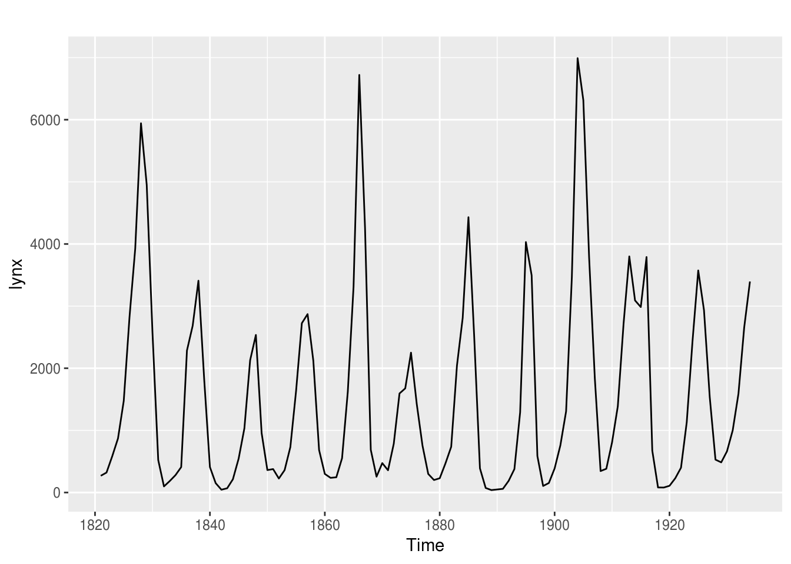
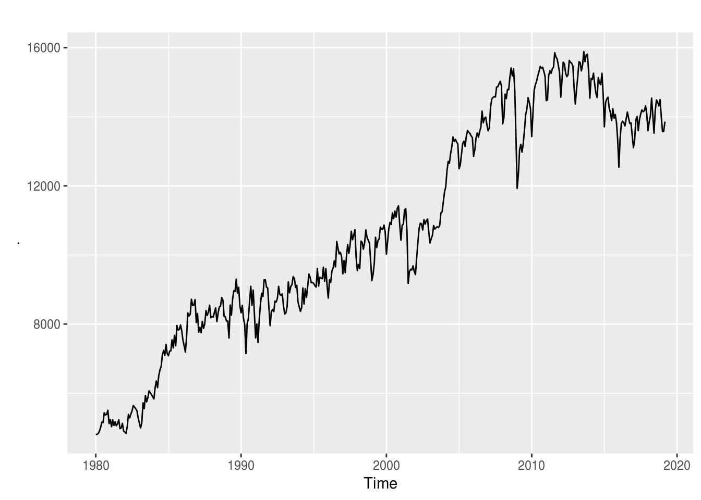
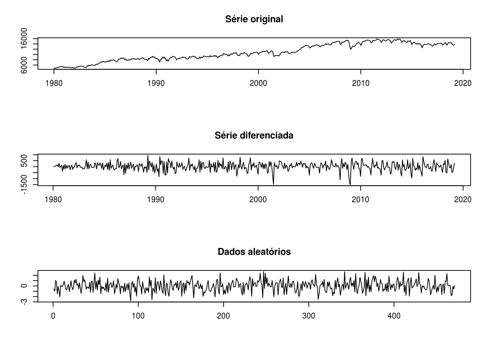
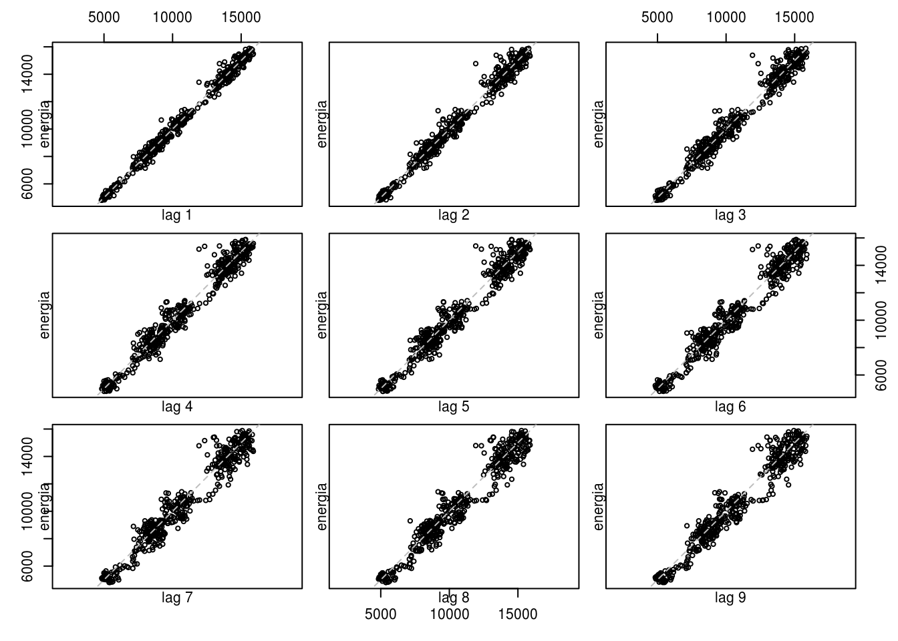
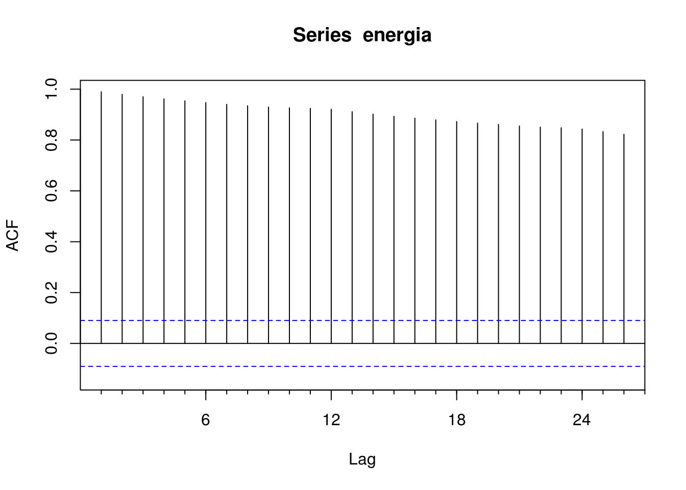
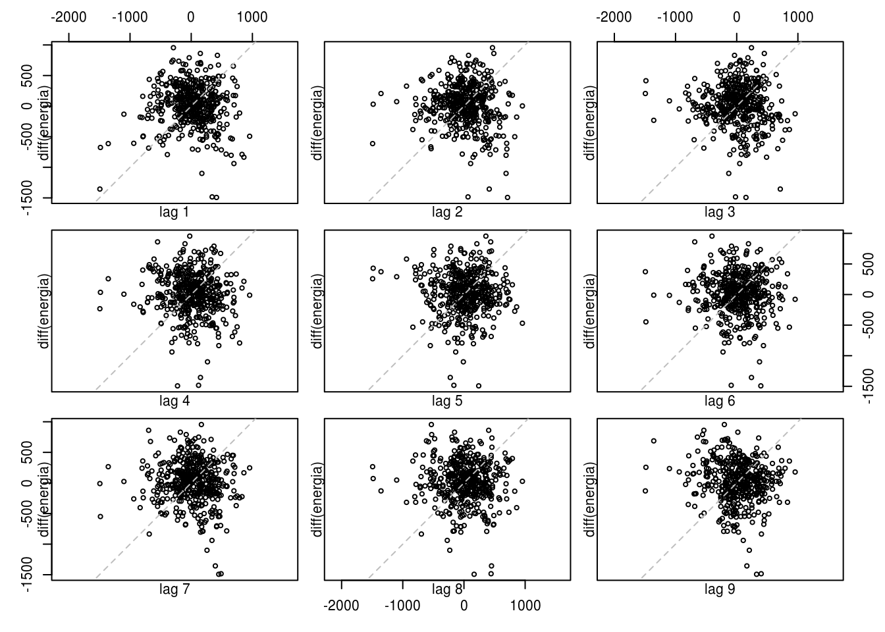
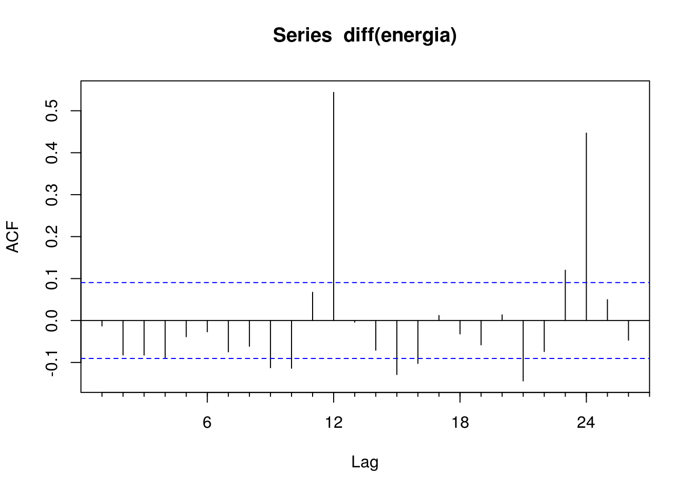
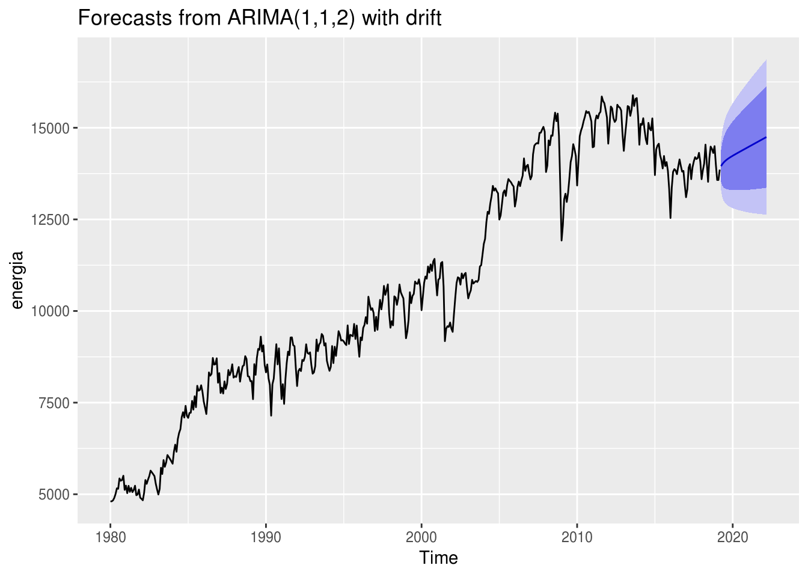
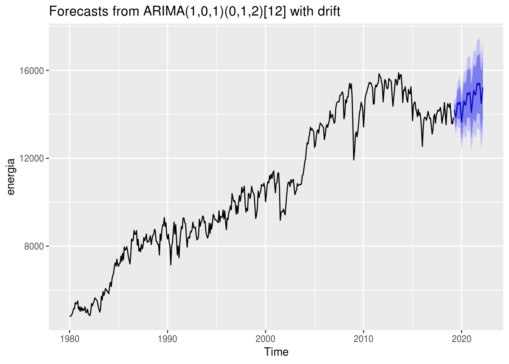

Capítulo 6 Modelos ARIMA
Modelos ARIMA são outra classe de modelos populares em forecasting. A diferença entre modelos de suavização exponencial e os ARIMA é que os primeiros são baseados em descrever a tendência e a sazonalidade na série, enquanto os segundos se baseam em autocorrelações presentes nos dados.
Para este capítulo, continuaremos usando a série temporal do consumo de energia pela indústria no Brasil.
library(forecast)
library(tidyverse)
energia <- readRDS("data/ts_energia.Rda")Antes de explicar o que é ARIMA, precisamos introduzir conceitos básicos como estacionariedade.
6.1 Estacionariedade, diferenciação e autocorrelação
Uma série temporal é dita estacionária se suas propriedades (média, variância, etc.) não dependem do tempo da observação. Portanto, séries que apresentam tendência ou sazonalidade não são estacionárias. Por outro lado, uma série composta por valores gerados aleatoriamente (ex. pela função rnorm) são estacionárias, visto que a “aparência” da série é basicamente a mesma para qualquer período \(t\).
data("lynx")
head(lynx)## Time Series:
## Start = 1821
## End = 1826
## Frequency = 1
## [1] 269 321 585 871 1475 2821autoplot(lynx)
Por curiosidade, linces são isto:

Aparentemente, a série apresenta ciclos ou sazonalidade, certo? Vamos ver seus componentes por dentro:
lynx %>% decompose() %>% autoplot()## Error in decompose(.): time series has no or less than 2 periodslynx %>% stl(s.window = "periodic") %>% autoplot()## Error in stl(., s.window = "periodic"): series is not periodic or has less than two periodsPor que a função retorna um erro? Acontece que esta série não possui sazonalidade. Os algoritmos de decomposição não foram capazes de detectar períodos em que padrões se repetem, visto que os ciclos, além de possuírem níveis não constantes, acontecem em diferentes períodos, tornando-os imprevisíveis.
Voltando a nossa série de exemplo. Ela é estacionária?
energia %>% autoplot()
Claramente, ela não é. Contudo, existe um método muito simples para a tornar estacionária, que é a diferenciação. Ele se baseia nada mais em calcular a diferença absoluta (ou percentual) entre uma observação e a outra. O intervalo entre as observações pode ser escolhido pelo usuário:
head(energia, 10)## Jan Feb Mar Apr May Jun Jul Aug Sep Oct
## 1980 4806 4808 4833 4901 5009 5162 5149 5432 5369 5391head(diff(energia), 10)## Feb Mar Apr May Jun Jul Aug Sep Oct Nov
## 1980 2 25 68 108 153 -13 283 -63 22 114head(diff(energia, 2), 10)## Mar Apr May Jun Jul Aug Sep Oct Nov Dec
## 1980 27 93 176 261 140 270 220 -41 136 -270# plotando as series
par(mfrow=c(3,1))
plot(energia, main = "Série original", xlab = "", ylab = "")
plot(diff(energia), main = "Série diferenciada", xlab = "", ylab = "")
# plotando uma serie aleatoria:
plot(rnorm(length(energia)), type = "l", main = "Dados aleatórios", xlab = "", ylab = "")
Vemos pelo gráfico que a série diferenciada se aproxima muito de dados gerados aleatoriamente, comprovando que o método da diferenciação tornou a série estacionária.
Uma outra maneira de analisar a estacionariedade de uma série é pelo conceito de autocorrelação, que é uma medida do relacionamento linear entre os valores dentro de uma mesma série (como se fosse uma correlação interna). A autocorrelação depende do lag que se deseja analisar. Por exemplo, \(r1\) se refere à relação entre \(y_t\) e \(y_{t-1}\).
A melhor maneira de se analisar a autocorrelação de uma série é por meio de gráficos:
lag.plot(energia, lags = 9)
No gráfico de dispersão acima, vimos que em todos os 9 lags analisados, existe uma correlação forte entre as observações entre si. Numericamente, temos:
Acf(energia, plot = FALSE)$acf %>% as.vector()## [1] 1.0000000 0.9895288 0.9793583 0.9701326 0.9616287 0.9539380 0.9469652
## [8] 0.9401798 0.9345256 0.9296718 0.9265290 0.9244649 0.9207918 0.9112844
## [15] 0.9016482 0.8932005 0.8856901 0.8792969 0.8726764 0.8664785 0.8610202
## [22] 0.8551207 0.8509758 0.8480218 0.8431056 0.8330215 0.8226599Outro gráfico muito útil para analisar a autocorrelação é o próprio gráfico de autocorrelação, também conhecido como correlograma:
Acf(energia)
A linha horizonal tracejada azul define o nível de significância mínimo. Isto é, se uma autocorrelação estiver acima dessa linha, ela é estatisticamente significativa.
Contudo, a situação é diferente para a série diferenciada, como mostram os gráficos abaixo:
lag.plot(diff(energia), lags = 9)
Acf(diff(energia))
O fato de ainda haver três valores podem indicar duas coisas:
- Que a série diferenciada ainda não é estacionária;
- Que a série diferenciada é sim estacionária, pois esses lags com forte autocorrelação podem ser devidos a uma aleatoriedade. De fato, espera-se que, para uma série aleatória, 5% dos valores na ACF encontrem-se fora do intervalo \(\pm 2/ \sqrt{T}\).
6.2 Modelos autoregressivos
A diferença entre modelos regressivos e autoregressivos é que os primeiros prevêem o valor de uma variável de interesse usando uma combinação linear (equação) das variáveis explanatórias. Já os segundos usam uma combinação linear de valores passados da própria variável. Matematicamente, um modelo autoregressivo é descrito como:
\(y_t = c + \phi_1y_{t-1} + \phi_2y_{t-2} + ... + \phi_py_{t-p} + e_t\)
Onde \(c\) é uma constante e \(e_t\) é um erro aleatório (ruído branco). Esse tipo de modelo é chamado de modelo AR(p) e são normalmente restritos a séries estacionárias.
No R, modelos autoregressivos podem ser ajustados por meio da função arima:
# explicaremos o que é o argumento order da função abaixo daqui a pouco
ar.p1 <- energia %>% diff() %>% arima(order = c(1, 0, 0))
ar.p2 <- energia %>% diff() %>% arima(order = c(2, 0, 0))
coefficients(ar.p1) %>% round(4)## ar1 intercept
## -0.0130 19.2715coefficients(ar.p2) %>% round(4)## ar1 ar2 intercept
## -0.0140 -0.0822 19.2385Portanto, as equações resultantes do ajuste de modelos autoregressivos de ordem 1 e 2 são, respectivamente:
\(y_t = 21.1135 - 0.0135y_{t-1} + e_t\)
\(y_t = 20.9643 - 0.01435y_{t-1} - 0.0143y_{t-2} + e_t\)
6.3 Modelos de média móvel
Modelos de média móvel utilizam valores passados de erro de previsão de maneira semelhante a um modelo de regressão:
\(y_t = c + e_t + \theta_1e_{t-1} + \theta_2e_{t-2} + ... + \theta_qe_{t-q}\)
Um modelo acima é chamado de modelo MA(q) e pode ser interpretado como um modelo onde \(y_t\) é uma média ponderada dos erros de previsão passados.
6.4 Modelos ARIMA
A combinação entre os métodos de diferenciação e os modelos de autoregressão e média móvel resultam em um modelo ARIMA (AutoRegressive Integrated Moving Average model) não-sazonal, que pode ser descrito matematicamente como:
\(\acute{y_t} = c + \phi_1\acute{y}_{t-1} + ... + \phi_p\acute{y}_{t-p} + \theta_1 + \theta_1e_{t-1} + ... + \theta_qe_{t-q} + e_t\)
Onde \(\acute{y}_t\) é a série diferenciada. A equação acima é o que descreve o modelo ARIMA(p, d, q), onde:
- \(p\) é a ordem do modelo autoregressivo;
- \(d\) é o grau de diferenciação;
- \(q\) é a ordem do modelo de média móvel.
Como seria complicado selecionar valores apropriada para cada um desses três parâmetros, a função forecast::auto.arima() faz isso automaticamente:
mod.arima <- auto.arima(energia, seasonal = FALSE)
summary(mod.arima)## Series: energia
## ARIMA(1,1,2) with drift
##
## Coefficients:
## ar1 ma1 ma2 drift
## 0.6842 -0.7456 -0.1086 19.4967
## s.e. 0.0798 0.0866 0.0525 7.2082
##
## sigma^2 estimated as 113359: log likelihood=-3400
## AIC=6810.01 AICc=6810.14 BIC=6830.77
##
## Training set error measures:
## ME RMSE MAE MPE MAPE MASE
## Training set 0.2500474 334.8969 253.1834 -0.02693067 2.5143 0.4598817
## ACF1
## Training set 0.003546764O modelo resultante é um ARIMA(2, 1, 1), o que corresponde a uma combinação a uma série com um grau de diferenciação (p = 1) aplicada em um modelo AR(2) e em um MA(1).
É possível saber o comportamento da previsão de um modelo ARIMA apenas baseado nos valores dos coeficientes c e d:
- Se \(c = 0\) e \(d = 0\), previsões em longo prazo serão iguais a zero;
- Se \(c = 0\) e \(d = 1\), serão iguais a uma constante maior que zero;
- Se \(c \neq 0\) e \(d = 2\), seguirão uma linha reta;
- Se \(c \neq 0\) e \(d = 0\), convergirão para a média da série;
- Se \(c \neq 0\) e \(d = 1\), seguirão uma linha reta;
- Se \(c \neq 0\) e \(d = 2\), seguirão uma tendência quadrática;
No caso do nosso exemplo, vamos ver se isso se aplica:
mod.arima %>% forecast(h = 36) %>% autoplot()
Conforme esperado, as previsões seguem uma linha reta, o que, em palavras, indicam que a série crescerá indefinitivamente.
Como ficaram as previsões de outras combinações ARIMA? Vamos fazer o teste:
# criar funcao para extrair previsao de um modelo arima
prever.arima <- function(p = 0, d, q = 0, con) {
# argumento c = binario TRUE ou FALSE
# argumento d = 0, 1 ou 2
x <- Arima(energia, order = c(p, d, q), include.constant = con, seasonal = c(0, 0, 0))
x <- forecast(x)
as.numeric(x$mean)
}
# plotar previsoes
prever.arima(d = 1, con = FALSE) %>% plot(type = "l")
prever.arima(d = 0, con = FALSE) %>% lines(col = "red")
prever.arima(d = 2, con = FALSE) %>% lines(col = "orange")
prever.arima(d = 0, con = TRUE) %>% lines(col = "green")
prever.arima(d = 1, con = TRUE) %>% lines(col = "pink")
prever.arima(d = 2, con = TRUE) %>% lines(col = "blue")6.5 Modelos SARIMA
Modelos ARIMA são capazes também de modelar séries que apresentam um componente sazonal, sendo descrito como:
ARIMA \((p, d, q)(P, D, Q)_m\)
Onde o primeiro parênteses se refere à parte não-sazonal do modelo e o segundo à parte sazonal. \(m\) corresponde ao número de períodos sazonais.
Ajustar um modelo SARIMA é semelhante ao processo de ajustar um ARIMA:
mod.sarima <- auto.arima(energia, seasonal = TRUE)
mod.sarima## Series: energia
## ARIMA(1,0,1)(0,1,2)[12] with drift
##
## Coefficients:
## ar1 ma1 sma1 sma2 drift
## 0.9655 -0.1093 -0.6945 -0.1370 20.3127
## s.e. 0.0137 0.0465 0.0470 0.0458 4.8901
##
## sigma^2 estimated as 68706: log likelihood=-3211.86
## AIC=6435.72 AICc=6435.9 BIC=6460.49mod.sarima %>% forecast(h = 36) %>% autoplot()
Para a série de análise, qual modelo possui o melhor ajuste: o sazonal ou o não-sazonal?
# calculando a qualidade de ajuste:
list(mod.arima, mod.sarima) %>% map(accuracy)## [[1]]
## ME RMSE MAE MPE MAPE MASE
## Training set 0.2500474 334.8969 253.1834 -0.02693067 2.5143 0.4598817
## ACF1
## Training set 0.003546764
##
## [[2]]
## ME RMSE MAE MPE MAPE MASE
## Training set 1.518877 257.3437 187.2863 0.0006205425 1.888167 0.3401863
## ACF1
## Training set -0.002581607# calculando a qualidade preditiva
treino <- window(energia, end = c(2015, 12))
teste <- window(energia, start = c(2016, 1))
mod.arima2 <- auto.arima(treino, seasonal = FALSE) %>% forecast(teste)## Warning in 1:h: numerical expression has 39 elements: only the first usedmod.sarima2 <- auto.arima(treino, seasonal = TRUE) %>% forecast(teste)
list(mod.arima2, mod.sarima2) %>% map(forecast) %>% map(accuracy, teste)## [[1]]
## ME RMSE MAE MPE MAPE MASE
## Training set 0.290353 326.0823 246.5337 -0.02778075 2.491441 0.4303939
## Test set 164.165281 367.2520 325.1233 1.12888967 2.343479 0.5675941
## ACF1 Theil's U
## Training set -0.0981782 NA
## Test set 0.4006154 1.033457
##
## [[2]]
## ME RMSE MAE MPE MAPE
## Training set 4.834388 279.3321 205.7491 0.04012374 2.137084
## Test set 1544.035378 1710.4150 1555.9073 11.01891349 11.113601
## MASE ACF1 Theil's U
## Training set 0.3591928 -0.002323165 NA
## Test set 2.7162735 0.850060508 5.025037Apesar de o modelo ARIMA possuir o pior qualidade de ajuste, seu desempenho para prever valores futuros é superior ao SARIMA.